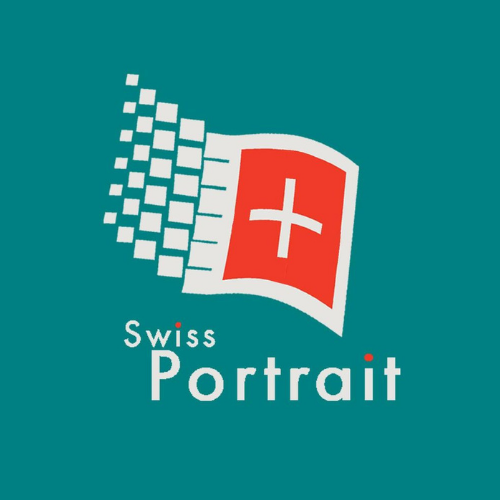
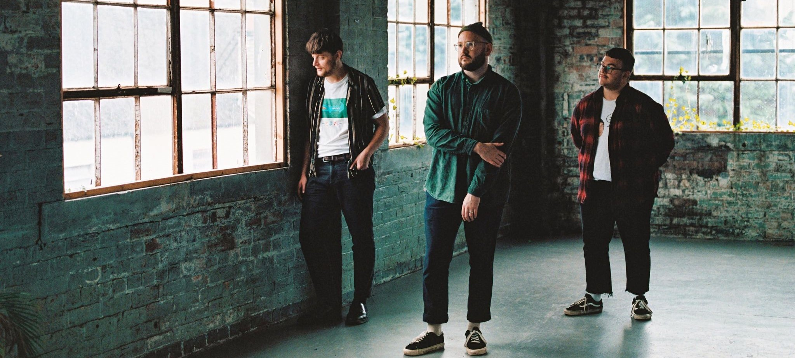
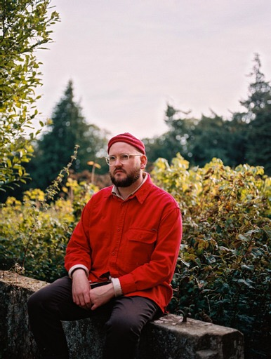

Swiss Portraitx

Swiss Portraits DIY - Dreampop foundations were built by Scottish born multi-instrumentalist Michael Kay
Terence.
Living in the rural Midlothian, Michael keeps a DIY approach, recording, playing, mixing, and producing
everything himself.
Since Swiss Portraits' birth from lockdown solitude, they been tipped for a big 2021 and an even bigger
2022. Selling out the
limited edition debut EP "Familiar Patterns" on cassette on the day of release, via the label Z-Tapes.
With hundreds of thousands of plays on Spotify from their debut EP, tracks such as "Cassette" have been
played on BBC introducing
and BBC Scotland, with their distinctive dreamy pop sound Swiss Portrait are sure to make waves.

Michael is joined live by friends
Carron (Bass), Andy (Drums) and Brett (Guitar)
RESONATE
SCOTLAND
"The brainchild of Edinburgh based writer-producer Michael Kay Terence,
Swiss Portrait has delivered time and time again with his effortlessly soothing indie pop productions.
There is no doubt that this DIY maestro has the tools, knowledge and technical know-how and he is building
something extraordinary."

E-mail : portraitswiss@gmail.com
